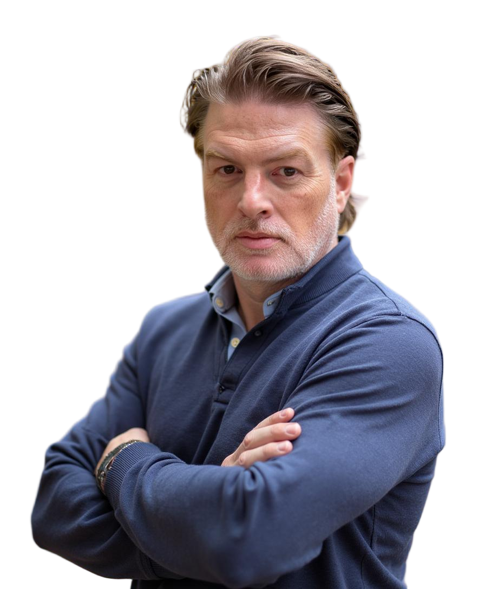

Engineering Leader
I build and scale engineering organizations. Not the code. The teams, the systems, the culture, and the conditions that let good engineers do their best work.
About
I've spent my career leading engineering at companies where the product is complex, the customers are demanding, and the stakes are real.
At Axway, I led global engineering teams building enterprise B2B integration platforms: the infrastructure that moves sensitive data between large organizations at scale. Thousands of enterprise customers. Regulated industries. Software that cannot go down.
At SimSpace, I scaled an engineering org from 50 to over 100 people while modernizing a cloud-native platform used to train the people who defend US critical infrastructure. Fast growth, hard problems, high standards.
I'm currently looking for my next VP or CTO role. Remote, at a company where engineering leadership actually matters to the outcome.
What I Do
From hiring plans to team structure to leadership development. I've done this through rapid growth phases and know what breaks and what holds.
Predictable delivery isn't luck. It's metrics, process, culture, and honest conversations about tradeoffs. I build the conditions for it.
Kubernetes, microservices, CI/CD, multi-cloud. I've led teams building and modernizing platforms that have to run at enterprise scale.
I work across product, sales, finance, and the board. Engineering strategy that connects to business outcomes, not just technical ones.
Experience
VP Engineering
Scaled the engineering organization from ~50 to 100+ engineers during a period of rapid platform modernization. Led cloud-native infrastructure work supporting US Cyber Command and critical infrastructure defense training.
VP Engineering and prior roles
Led global engineering teams building enterprise B2B integration and secure data exchange platforms. 11,000+ enterprise customers across regulated industries including healthcare, financial services, and logistics.
University of Michigan
Now
Open to VP Engineering, SVP Engineering, Head of Engineering, and CTO roles. Remote US. Based in Phoenix, AZ.
On the side, I'm building Blue Luci, an indie app studio. It keeps me close to the work.
I write occasionally on LinkedIn about engineering leadership, team building, and what job postings for senior roles keep getting wrong.
Contact
If you're building something that needs engineering leadership, I'd like to hear about it.